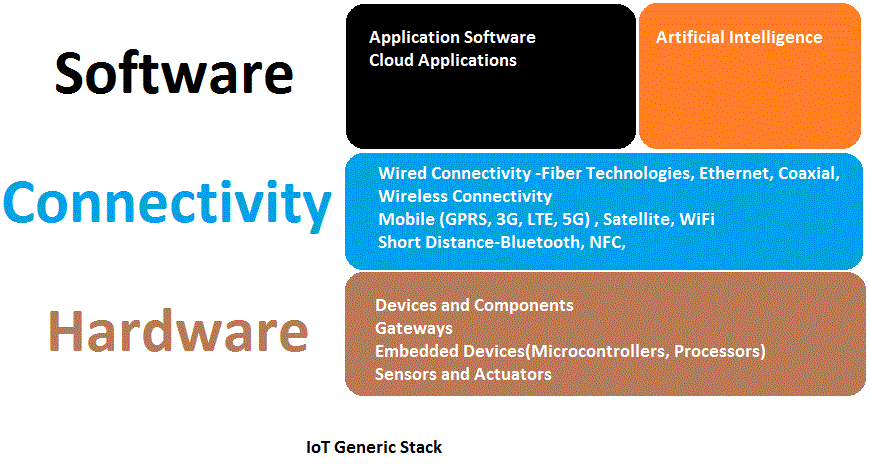

The Internet of Things is the interconnection of endpoints (devices and things) which can be uniquely addressed and identified with an address and which can connect with eachother without human intervention.Several entities have defined the IoT in their own words. Essentially these definitions mean the same but show a particular angle from which the organizations approach the subject matter.Some of the prominent entities definitions are given below
ITU
International Telecommunication Union❝ The Internet of Things (IoT) has been defined in Recommendation ITU-T Y. 2060 (06/2012) as a global infrastructure for the information society, enabling advanced services by interconnecting (physical and virtual) things based on existing and evolving interoperable information and communication technologies.❞
Cisco
❝ The Internet of Things (IoT) is the network of physical objects that contain embedded technology to communicate and sense or interact with their internal states or the external environment.❞
Wikipedia
❝ In computing, the Internet of things, also known as the Internet of objects, refers to the networked interconnection of everyday objects.❞
IETF
Internet Engineering Task Force❝ The Internet of Things is the network of physical objects or "things" embedded with electronics, software, sensors, and connectivity to enable objects to exchange data with the manufacturer, operator and/or other connected devices.❞
Gartner
❝ The IoT is the network of physical objects that contain embedded technology to communicate and sense or interact with their internal states or the external environment.❞
IoT adds a new sphere of information, interaction, transaction and action to the Internet thanks to devices, equipped with data sensing, analysis and communication capabilities, using internet technologies. The Internet of Things further bridges digital and physical realities and powers information-driven automation and improvements on the level of business, society and people's lives. It as a large number of end devices and facilities that is not limited by region. It includes ``internal intelligence'' and ``external enablement''. Internal intelligence is mainly composed of sensors, mobile terminals, industrial systems, numerical control systems, home intelligent facilities, video surveillance systems and so on. External enablement refers to all kinds of assets such as tagged with RFID (Radio Frequency Identification), intelligent products such as individuals and vehicles with wireless terminals. Through a variety of wireless or wired long-distance or short distance networks for transmission, application integration, as well as cloud computing-based software and service operation mode, in the Internet, LAN and other environments, the use of appropriate information protection mechanisms can provide security and even personalized real-time online monitoring, GPS positioning traceability, early warning management, remote control, security prevention, remote maintenance, on-line upgrade etc. It has realized the integrated management of high effciency, energy saving, safety and environmental protection.
The interconnection of physical devices with embedded sensing and communication possibilities, including sensors and actuators, is not new and has a long history in the sense of M2M networks. But the record of coining and using the term internet of things is attributed to Kevin Ashton , the co-founder of the MIT Auto-ID Center, in 1999.
By the year 2013, the Internet of Things had evolved into to a system using multiple technologies, ranging from the Internet to wireless communication and from micro-electromechanical systems (MEMS) to embedded systems. The traditional fields of automation (including the automation of buildings and homes), wireless sensor networks, GPS, control systems, and others, all support the IoT. Defining the Internet of things as "simply the point in time when more 'things or objects' were connected to the Internet than people", Cisco Systems estimated that the IoT was "born" between 2008 and 2009, with the things/people ratio growing from 0.08 in 2003 to 1.84 in 2010.
In order to come up with a good picture of the IoT ecosystem, it is better to start with the IoT stack. A stack is the collection of the technologiesthat forms the operational infrastructure on a given machine In a computing context And the respective ecosystem is the collection of organizations that supply service or goods that enable the production, supply, implementation and operation of these technologies.
The IoT ecosystem is a collection of organization and process that are involved in the provision of technologies and products represented in the stack. It also includes auxilary services that are vital and directely related to the stack such as R&D, standardization, management, and financial organization. The consumer and government are included in the broader ecosystem picture as the influence in many ways developments in the IoT stack. Accordingly, organizations involved in the design and manufacturing of sensors & actuators, embedded devices, IoT gateways, constitute the hardware group of the ecosystem. Connectivity technology and connectivity services providers including telecom companies for the other group of IoT ecosystem. In the software group organizations that develop applications for IoT, cloud analytics application developers and service providers and the like are included. AI is becoming an important component of IoT. AI benefits from IoT generated data. On the other hand AI is providing cognitive capacities or intelligence to things. AI is considered as part of the software group of the IoT ecosystem. It may also be considered as a seperate group by itself.
IoT is one of the subject matters widely discussed in social media. A search entry of IoT on december 15, 2019 produced About 26,80,00,000 results. The following video is taken from youtube